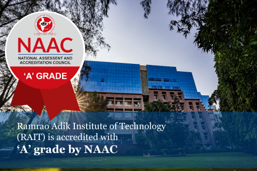
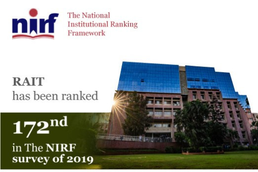
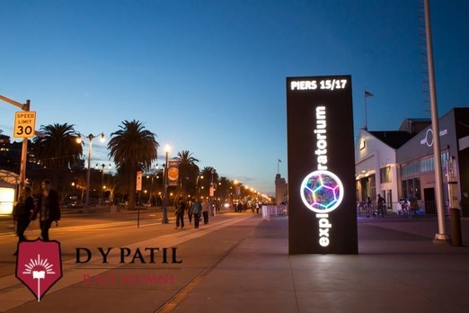
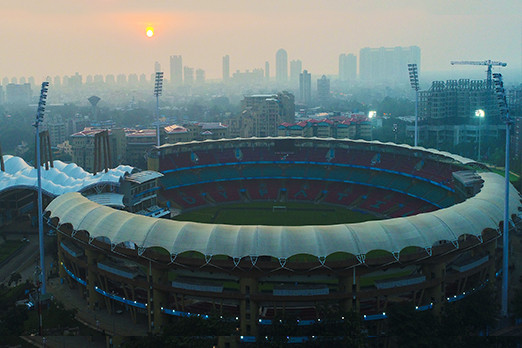
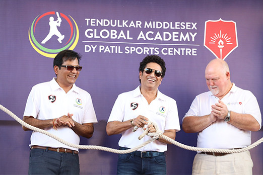

Engineers today have propelled the world to a new era of technological advancement. Blending curiosity with scientific temperament is the need of the hour as the world faces a new set of challenges. Nurturing this spirit for over a 37 years stands Ramrao Adik Institue of Technology (RAIT), a prodigy of Ramrao Adik Education Society. The institute is one of the oldest and finest colleges of Navi Mumbai. Located in the lush green Dr. D Y Patil Technical Campus, RAIT provides state of the art amenities, which combined with experienced teachers and an amicable environment ensure an all-round development of students. Its proximity to the Mumbai-Pune Express Highway makes it easily accessible. The institution also organizes various student centric activities which provide students with umpteen number of learning opportunities.
 RAIT offers a plethora of courses including Computer Engineering, Information Technology, Electronics Engineering, Electronics and Telecommunication Engineering and Instrumentation Engineering. RAIT is affiliated to DY Patil Deemed to be University, recognized by All India Council for Technical Education (AICTE) and accredited by National Assessment and Accreditation Council with “A” grade, paving way for a promising future.
  Like most successfully managed institutions, RAIT also believes in following the principles of democratic governance. Various committees are set up to ensure the smooth functioning of the institute. Regular and periodic meetings are held among the committees which involve the management, faculty and staff to address essential issues and to ensure proper coordination among the various departments, committee conveners and administrative staff. An institution progresses when its mainstay, the student community prospers. This can be seen in the various steps taken by the institute to ensure a contented student force in its campus. Counsellors are appointed to counsel the students and redress their grievances if any. An institution grows only when it makes appropriate changes from time to time. Such a change is possible only if there is a feedback system. The institution follows an efficient system of collecting feedback about faculty performance from the students. The faculty appraisals are collected and reviewed periodically by Quality Assurance Team of RAIT.